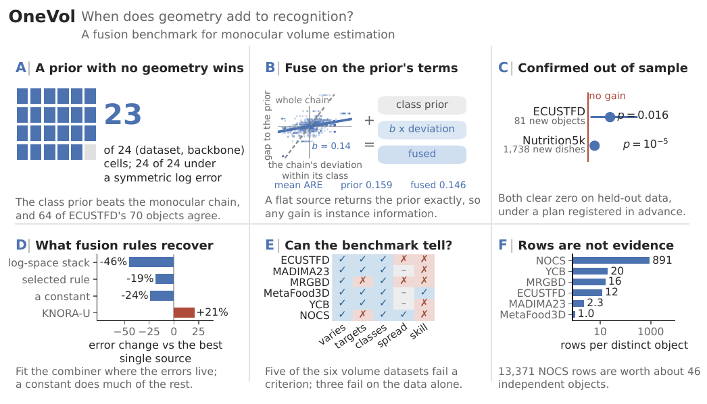

OneVol: When Does Geometry Add to Recognition? A Fusion Benchmark for Monocular Volume Estimation
2026 project page / code
A fusion benchmark that factors a monocular volume estimate into six channels and combines them on eight datasets. The median volume of same-class training objects, using no image geometry at all, beats the full monocular pipeline in 23 of 24 dataset–backbone cells; geometry only adds when it is fused on recognition's terms.